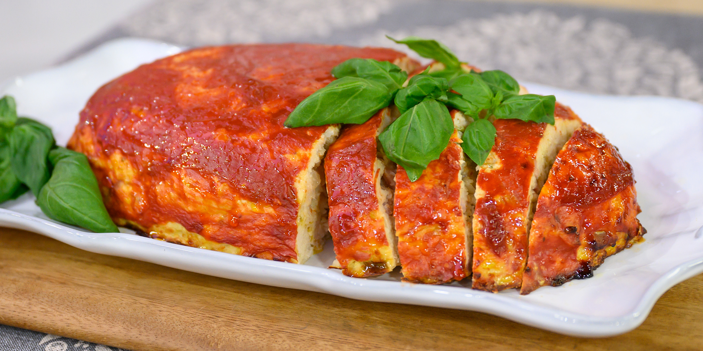

Italian Style Turkey Meatloaf

Description
Healthy, low-fat version of a favorite with an Italian flair.
Ingredients
- cooking spray
- 1 pound ground turkey
- 1 egg
- ¼ cup Italian seasoned bread crumbs
- 1 teaspoon Italian seasoning
- ½ clove garlic, minced
- ½ teaspoon ground black pepper, or to taste
- ¼ teaspoon salt, or to taste
- 2 cups tomato sauce, divided
steps
-
Preheat oven to 400 degrees F (200 degrees C). Prepare a baking dish
with cooking spray.
-
Mix turkey, egg, bread crumbs, Italian seasoning, garlic, black pepper,
and salt in a large bowl; shape into a loaf and put into prepared baking
dish.
-
Bake in preheated oven for 40 minutes. Spoon about half the tomato sauce
over the loaf and continue baking until the meatloaf is no longer pink
in the center, 10 to 15 minutes more. An instant-read thermometer
inserted into the center should read at least 160 degrees F (70 degrees
C). Rest meatloaf 5 to 10 minutes before slicing to serve.
-
While the meatloaf rests, warm remaining tomato sauce in a small
saucepan over medium-low heat; serve with the sliced meatloaf.